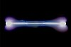

xenon

Definition: Xenon is a chemical element with the symbol Xe and atomic number 54. It is a dense, colorless, odorless noble gas found in Earth's atmosphere in trace amounts. Although generally unreactive, it can undergo a few chemical reactions such as the formation of xenon hexafluoroplatinate, the first noble gas compound to be synthesized.Xenon is used in flash lamps and arc lamps, and as a general anesthetic. The first excimer laser design used a xenon dimer molecule (Xe2) as the lasing medium, and the earliest laser designs used xenon flash lamps as pumps. Xenon is also used to search for hypothetical weakly interacting massive particles
Source: Wikipedia
Wikipedia Page (Something wrong with this association? Let us know.)
Wikidata Page (Something wrong with this association? Let us know.)